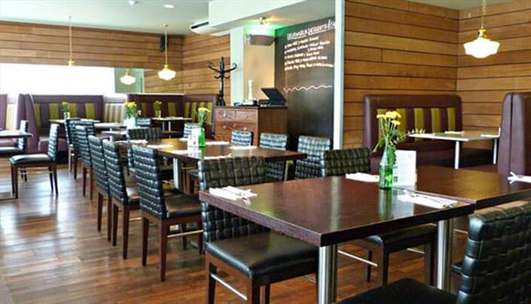

The restaurant scene in Liverpool city region is booming, with more places to eat and more international cuisines than ever before. Our suggestion of restaurants includes The London Carriage Works, Fonseca's and Delifonseca Dockside.